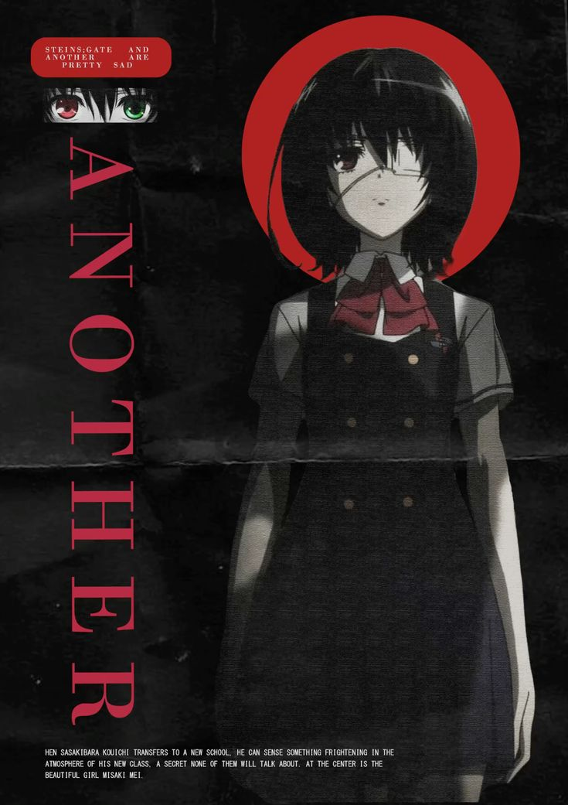

Lore
Hace 26 años, en la clase de tercer año de media de una escuela, se encontraba una estudiante llamada Misaki. Una estudiante de honor que también era buena en los deportes y a su vez era popular con sus compañeros de clase. Cuando murió, sus compañeros de clase decidieron fingir que ella seguía viva hasta la graduación. Entonces, en el verano de 1998, un chico llamado Sakakibara Kouchi fue transferido a esta clase, comenzando a sospechar acerca de aquella atmósfera que se vivía en aquel lugar, en particular con una chica hermosa, bastante distante de nombre Mei Misaki quien llevaba un parche en el ojo.